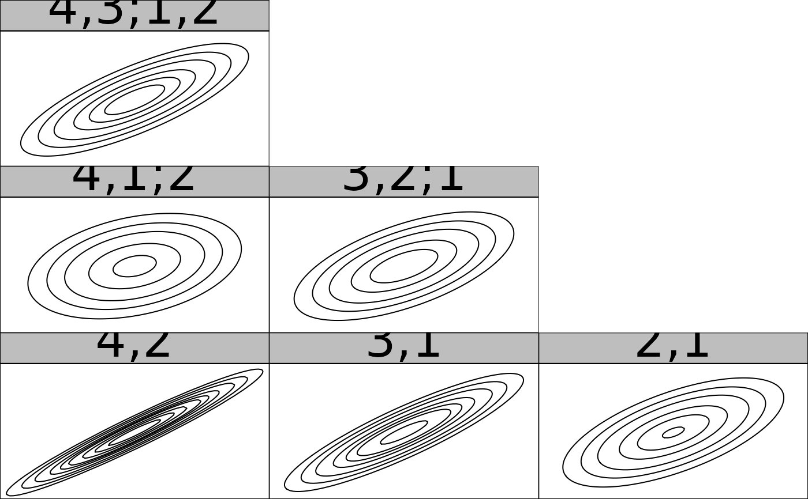

There are two plotting generics for vinecop_dist objects.
plot.vinecop_dist plots one or all trees of a given R-vine copula
model. Edges can be labeled with information about the corresponding
pair-copula. contour.vinecop_dist produces a matrix of contour plots
(using plot.bicop).
# S3 method for vinecop_dist plot(x, tree = 1, var_names = "ignore", edge_labels = NULL, ...) # S3 method for vinecop plot(x, tree = 1, var_names = "ignore", edge_labels = NULL, ...) # S3 method for vinecop_dist contour(x, tree = "ALL", cex.nums = 1, ...) # S3 method for vinecop contour(x, tree = "ALL", cex.nums = 1, ...)
Arguments
| x |
|
|---|---|
| tree |
|
| var_names | integer; specifies how to make use of variable names:
|
| edge_labels | character; options are:
|
| ... | Unused for |
| cex.nums | numeric; expansion factor for font of the numbers. |
Details
If you want the contour boxes to be perfect squares, the plot height should
be 1.25/length(tree)*(d - min(tree)) times the plot width.
The plot() method returns an object that (among other things) contains the
igraph representation of the graph; see Examples.
See also
Author
Thomas Nagler, Thibault Vatter
Examples
# set up vine copula model u <- matrix(runif(20 * 10), 20, 10) vc <- vinecop(u, family = "indep") # plot plot(vc, tree = c(1, 2))#> IGRAPH fea5d4f UN-- 10 9 -- #> + attr: name (v/c), name (e/c) #> + edges from fea5d4f (vertex names): #> [1] 3--2 8--2 2--6 1--6 6--4 4--5 9--5 5--10 7--10#> [1] "indep(0)" "indep(0)" "indep(0)" "indep(0)" "indep(0)" "indep(0)" "indep(0)" #> [8] "indep(0)" "indep(0)"# set up another vine copula model pcs <- lapply(1:3, function(j) # pair-copulas in tree j lapply(runif(4 - j), function(cor) bicop_dist("gaussian", 0, cor))) mat <- rvine_matrix_sim(4) vc <- vinecop_dist(pcs, mat) # contour plot contour(vc)